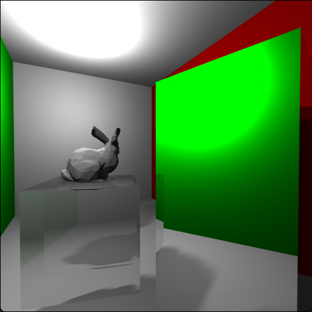
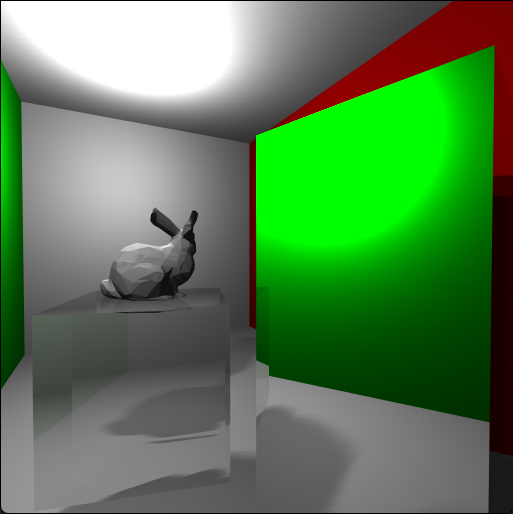

First-person shooter made in custom C++ game engine for windows and PlayStation 4
Sub Nivis is a game we made in the engine "The Other Engine". The Other Engine is a custom game engine I made together with a team of 5 other programmers. We spent 6 weeks on the Engine, developing it from scratch in C++. With it you can create games for both Windows and PlayStation 4. We loaded quake maps, made in the level editor Trenchbroom. At the end of these 6 weeks we got the engine in a working state for a demo game "Eribon".
After these 6 weeks our engine was selected by our teachers to go on to the next block where our team grew to 8 programmers, 3 designers, and 2 artists. With this team we went on to create the game "Sub Nivis".
In the creation of this engine I was responsible for designing the engine with an entity component system, the collisions, the editor, and some gameplay elements like the melee attack.
We made the game together with 8 programmers, 3 designers, and 2 artists in the engine. The game is playable on both PS4 and Windows PC. You can find the itch.io page below.
Personally I worked a lot on the stability of the engine and the collisions, the melee weapon attack and animation, the PS4 setup, and the pickups.
We ended up winning the best programming award of our year.
Unfortunately, we are not allowed to share the full code because the PlayStation 4 code is protected by an NDA.
Itch.io download


 
